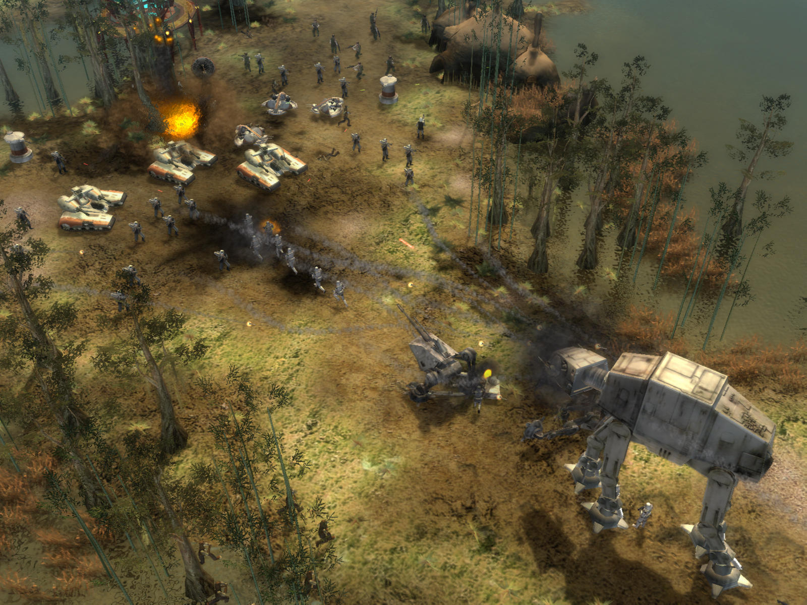

Star Wars The Old Republic
Нельзя не упомянуть отличную ММО РПГ от той же BioWare, где события разворачивались спустя 300 лет после событий Kotor, с которой она была тесно связана. Мы выбирали класс персонажа, его умения, а после этого фракцию – Республику или Империю ситхов. Игру в свое время вообще называли лучшим конкурентом WoW.
Star Wars Empire at War
И под конец нашего списка, вспомним о хорошей стратегии, о противостоянии Империи и повстанцев. Сюжет разворачивался между событиями третьего и четвертого фильма. Мы могли играть как в настоящих космических масштабах, так и по классике RTS на определенных локациях. И как всегда – всё в любимом нам сеттинге Звездных Войн.